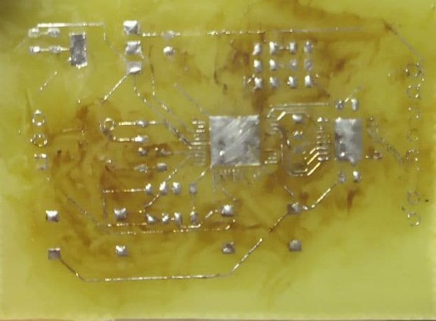

Размеры платы: 50*35 мм
Тип платы: односторонняя https://www.rezonit.ru/directory/baza-znaniy/tekhnologiya-izgotovleniya-pechatnykh-plat-v-kartinkakh/dvustoronnie-pechatnye-plat/
Отрезать текстолит по размерам печатной платы ножницами.
Распечатать на обычном листе A4 рисунок печатной платы в зеркальном отображении.
Отрезать фотобумагу по размеру печатной платы, закрепить её на листе A4 поверх рисунка платы с помощью ценников по краям.
Напечатать рисунок печатной платы на фотобумаге в зеркальном отображении.
Отполировать медь на плате губкой для посуды с пемолюксом.
Обезжирить медь на плате жидкостью для снятия лака используя ватный диск.
Для того чтобы повысить адгезию тонера к медному слою печатной платы окунуть заготовку печатной платы в раствор хлорного железа до образования розового цвета.
Промыть заготовку печатной платы под водой.
Протереть медь на плате жидкостью для снятия лака.
Разогреть утюг.
Нагреть заготовку печатной платы утюгом через лист бумаги для повышения адгезии тонера.
Закрепить фотобумагу с рисунком поверх заготовки печатной платы и положить на термостойкую поверхность.
Придавить утюгом фотобумагу к заготовке печатной платы и поводить из стороны в сторону чтобы прогладить всю поверхность, этот процесс выполнять в течение 2 минут.
Убрать утюг с заготовки.
Поместить заготовку печатной платы с фотобумагой под струю воды в раковине, не отрывая фотобумагу.
Подождать пока бумага намокнет и размякнет.
Пальцами или губкой постепенно и послойно убирать фотобумагу с заготовки, скатывая бумагу к краям.
Тонер с фотобумаги должен полностью перенестись на заготовку печатной платы.
Рисунок должен быть без разрывов.
Разрывы дорожек если они небольшие и их мало устранить с помощью тонкого перманентного маркера (или рейсфедером).
Закрепить заготовку печатной платы на держателе слоем меди вниз и поместить в ёмкость с раствором хлорного железа.
Выдержать заготовку в растворе периодически перемешивая в течении 30 минут (время зависит от концентрации раствора).
Достать печатную плату из раствора.
Промыть печатную плату под водой.
С помощбю губки для посуды и пемолюкса постепенно убрать тонер с печатной платы, все дорожки должны быть целыми.
Протереть медь на плате жидкостью для снятия лака.
Закрепить печатную плату на рабочем столе под настольной лампой.
Нанести жидкий флюс на печатную плату.
Нанести паяльную пасту на печатную плату.
Паяльным феном пропаять (залудить) все дорожки печатной платы.
Пинцетом расставить электронные компоненты поверх печатной платы.
Паяльным феном пропаять все электронные компоненты.
Конец.
После переноса тонера на заготовку печатной платы:
После высыхания, видны остатки слоя от бумаги:
После травления:
После снятия тонера:
После лужения:
После распайки компонентов:
Видно, что с каждым этапом дорожки платы портились все больше и больше.
На этапе лужения много дорожек отслоилось.
Инструменты и материалы для пайки которые имеются в наличии не могут обеспечить приемлимый результат.
Необходимо использовать жидкий флюс и паяльную пасту вместо канифоли и припоя.
Вместо паяльника надо попробовать использовать паяльный фен.
На этапе перевода тонера на текстолит надо лучше обезжиривать поверхность и использовать маркер для устранения разрыва дорожек.
Шкурка
Зубочистка
Растовор
Пемолюкс
Ценники
Жидкость для снятия лака
Настолькная лампа
Лудить на низкой температуре и недолго, дороджки отрываеются
Делать дорожки шире все какие возможно
Нужен жидкий флюс, паяльная паста и фен!!! Каньфоль не смыватся она твердая!
Пинцет мелкунй нужно
Держалку для платы
Увеличительное стекло
====
Небольшой совет тем, у кого рисунок на этапе утюга плохо переносится на плату — местами не пристаёт к плате или отрывается с бумагой. Я долго мучился с этим моментом, тщательно мыл и обезжиривал текстолит, пробовал разную бумагу. Но помогла простая вещь, я буквально минуту или даже меньше протравливал текстолит перед нанесением рисунка, он приобретал приятный розоватый оттенок чистой меди и рисунок утюгом переводился на текстолит со свистом, так что потом его ничем не ототрёшь:)
====
3. В качестве обезжиривателя и легкого абразива хорошо работает пемолюкс, им же можно оттирать тонер после неудачного опыта. Качество обезжиривания хорошо контролируется на глаз по
Года 2 назад делал небольшую плату (15 * 25 мм). Печатал на термотрансферной бумаге Lomond 0807415. Утюгом перенеслось идеально, только было несколько непропечатанных принтером мест, их я подправлял маркером. Обезжиривал тем, что было под рукой (этиловый спирт 98%), травил хлорным железом. Других подробностей уже не помню.
=====
Поделюсь своими практиками в ЛУТе.
1. Вместо шкурки я использую ацетон и 2-5 минут подтравливание всей
поверхности заготовки (в зависимости от свежести раствора), до нанесения
рисунка. Готовность платы определяю по характерному покраснению меди. Для
травления применяю классическое хлорное железо на водяной бане 60-70°С.
2. Для лучшего прилипания тонера я во-первых использую тяжелый советский
утюг на максимальной температуре для начального подогрева. Затем осторожно
провожу его краем по всему рисунку платы. Переводится что называется «без
единого разрыва».
Да, бумагу использую глянцевую Lomond 120 г/см2.
==================================
Люди, объясните, зачем в 21м веке эти прыжки с бубном? На любом углу можно купить текстолит уже покрытый фоторезистом, лазерник, пленка, ультрафиолетовая лампа, крот. Всё. Качество на порядок лучше должно быть.
Изготовление печатных плат ЛУТ'ом от А до Я https://habr.com/ru/post/451314/
https://mysku.ru/blog/aliexpress/25948.html
Изготовление печатной платы
Источники
http://digitrode.ru/articles/1232-kakie-vidy-pechatnyh-plat-suschestvuyut.html